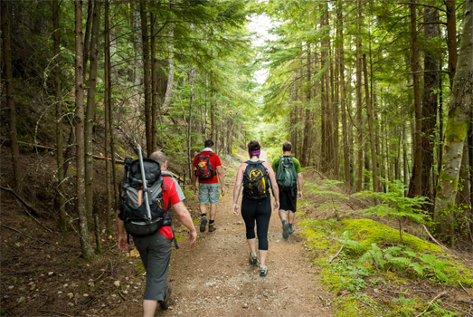
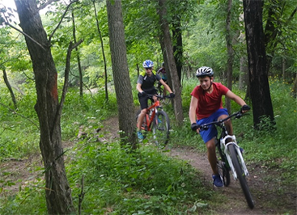
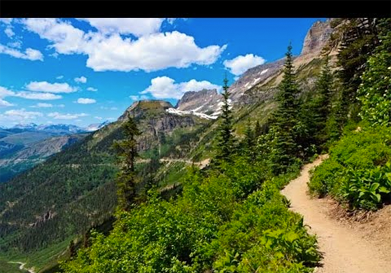

2,802 Miles of Trail to be Improved on International Trails Day
On June 2, 2018, people across the worldwill come together to collectively improve 2,802 miles of trail—the distance across the world—during International Trails Day. Muncak invites hikers, cyclists,…

Four Ways to Celebrate International Trails Day on a Bicycle
There are many ways to celebrate the International Trails Day on June 2. It’s even possible to participate on a bicycle. And if you go on a bike overnight trip during International Trails Dayyou will simultaneously…

Millennials are the Future of our Trails
The smell of fresh dew is a welcome scent, as the crunch of my boots melds with the sound of the birds singing their morning song. It’s early and I am wearing layers, but it won’t be long until they are peeled away to adapt to the summer…